Про театр
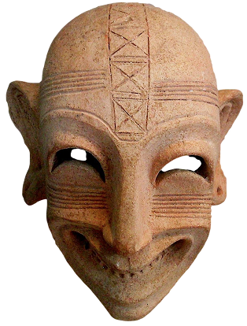
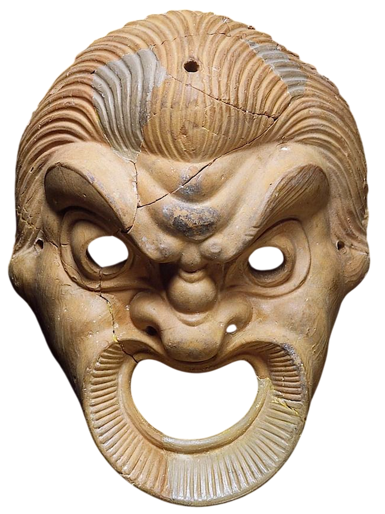
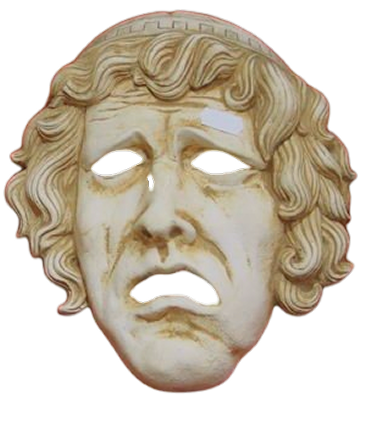
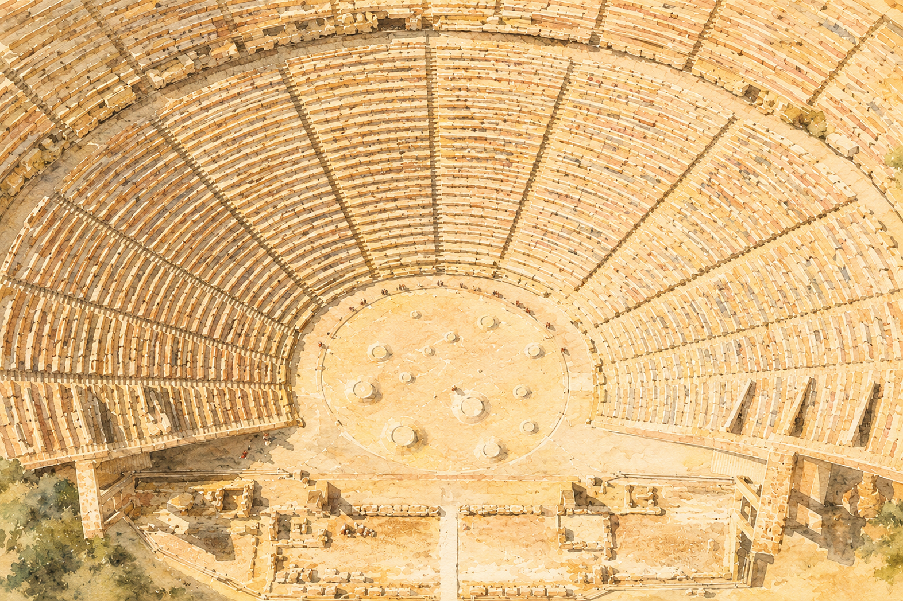
VI век до нашей эры
Начало
театра
Театр начинается в Древней Греции, когда Феспис, путешествующий со своим хором, решается примерить
на себя роль Бога и ответить хору. Именно так появляется привычный нам театр с актерами, которые играют роли.
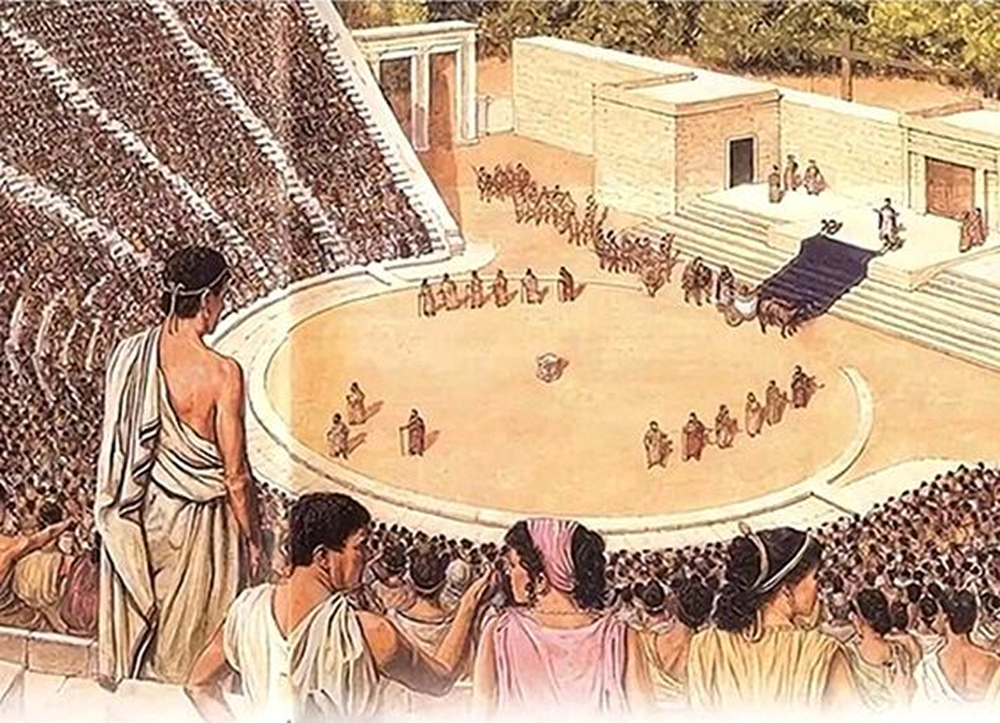
Однако перед появлением классического театра, люди воспевают богов и полу богов, придумывают бытовые истории, которые будут понятны любому, но все же связаны с чем-то божественным. Так, постепенно появляется разделение на комедию и трагедию.
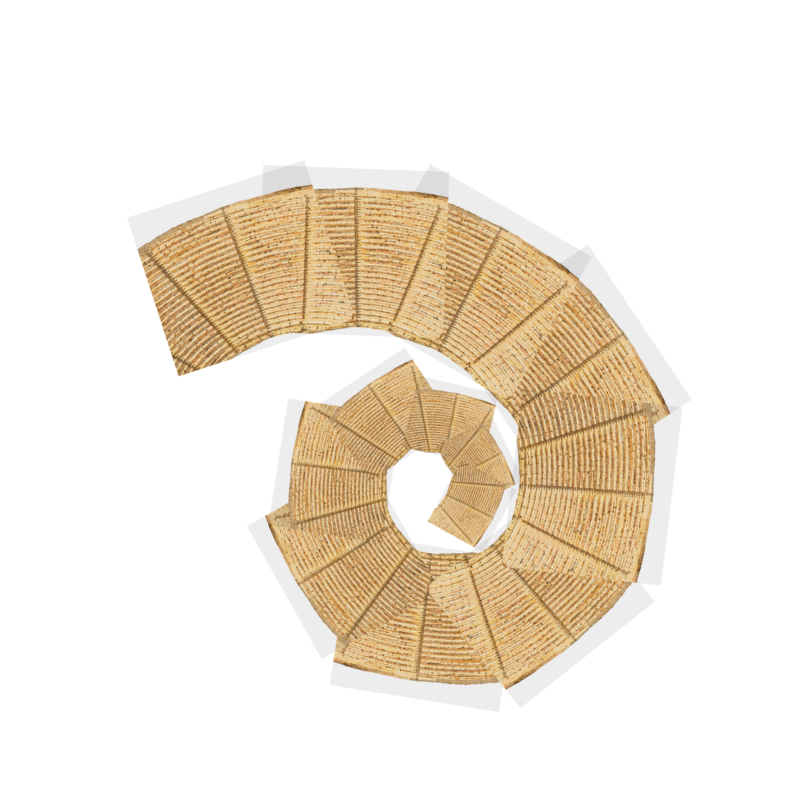
Несправедливость
Иерархия
рядов
Трагедия считалась высоким жанром, историей, которую может понять не каждый. Трагедии рассказывались в амфитеатрах, где люди сидели согласно иерархии.


На самом верху сидели люди с самым низким статусом, те, кто совершенно не разбирался в искусстве и не имел достаточно средств на то, чтобы разбираться в нем.
Средние ряда занимали люди среднего класса, которым было важно появляться в обществе, чтобы постепенно повышать свой статус
Внизу, совсем рядом со сценой сидели самые почитаемые обществом люди. Считалось, что они разбирались в искусстве, понимали высокий стиль речи актеров и разделяли трагедию, показанную на сцене.
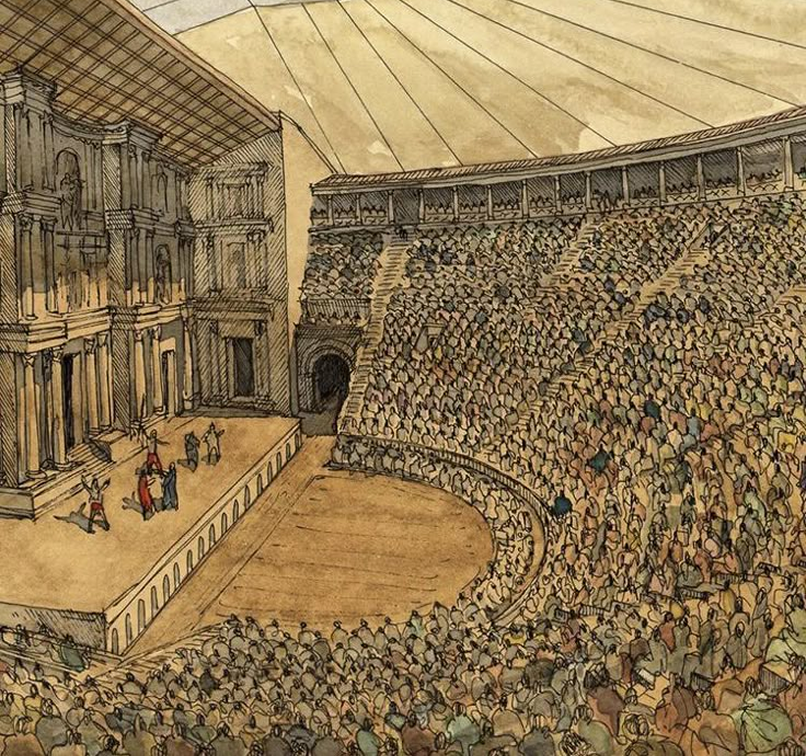
Рост
театра
Так, театр приобрел привычные нам черты. Шло время и античный театр претерпевал сильные изменения, в первую очередь в своей внешней части. У актеров появилась выраженная сцена, за которой образовались кулисы, где актеры готовились к выступлениям.
Так начинается театр – развлечение,
которое может быть доступно и понятно
только избранным
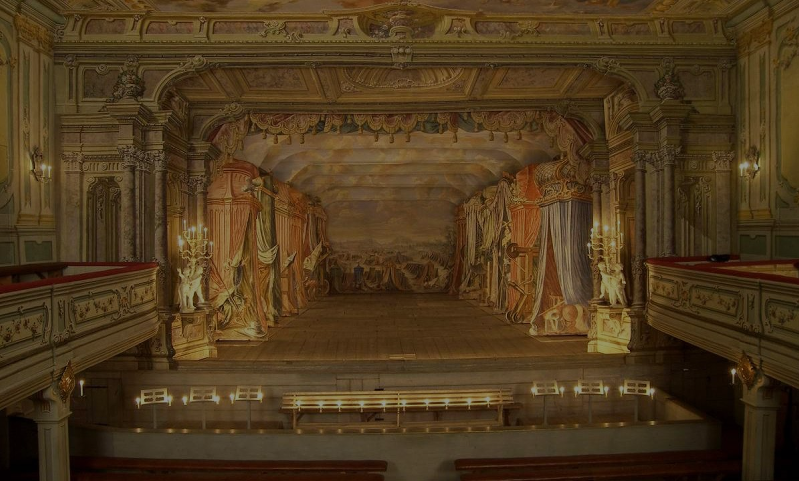
XVII век
нашей эры
Классический
театр
В 17 веке театр процветает в эстетике классицизма. Появляется понятие трех единств – места, времени и действия, главным “правилом” считается подражание античным образцам, а комедия и трагедия окончательно разделяются на низкий и высокий жанры.
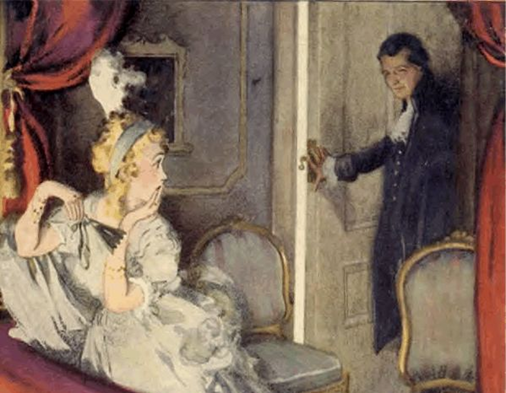
Театр приобретает другую форму. Теперь это полноценное здание, внутри которого находится сцена и зрительный зал, который тоже видоизменяется: помимо обычных рядов сверху появляются балконы и ложи. Именно они становятся показательным разграничением между статусами людей.
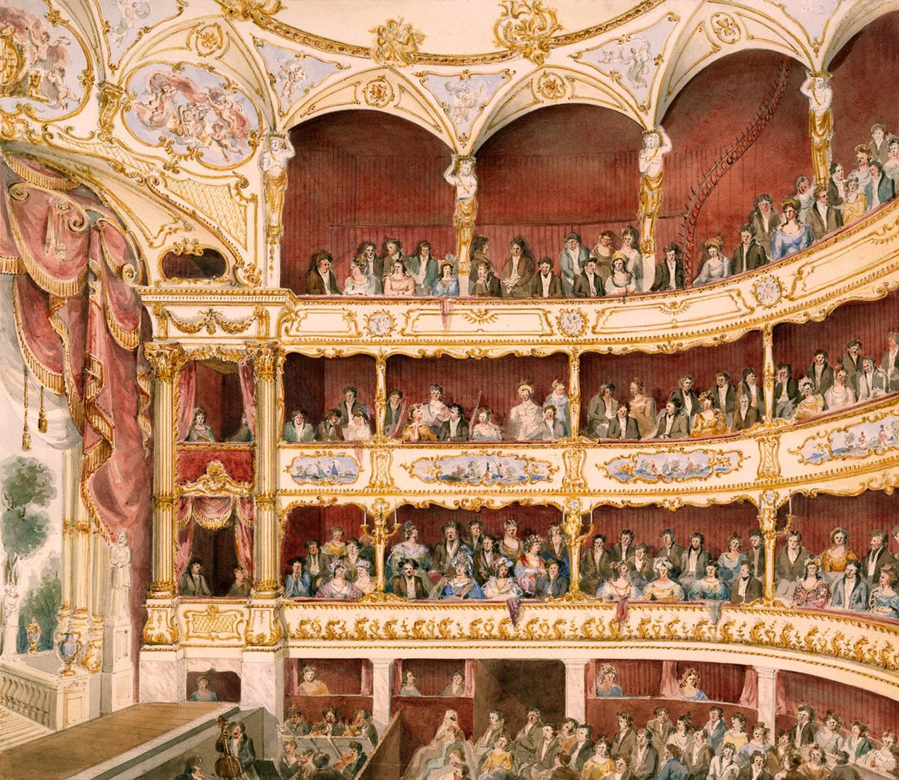
Балконы
На балконах, расположенных с краю, ближе всего к сцене, расположились режиссеры, постановщики и прочие люди, принимавшие участие в постановке спектакля. Здесь обсуждались будущие постановки, труппа и прочие детали, касающиеся внутреннего устройства театра.
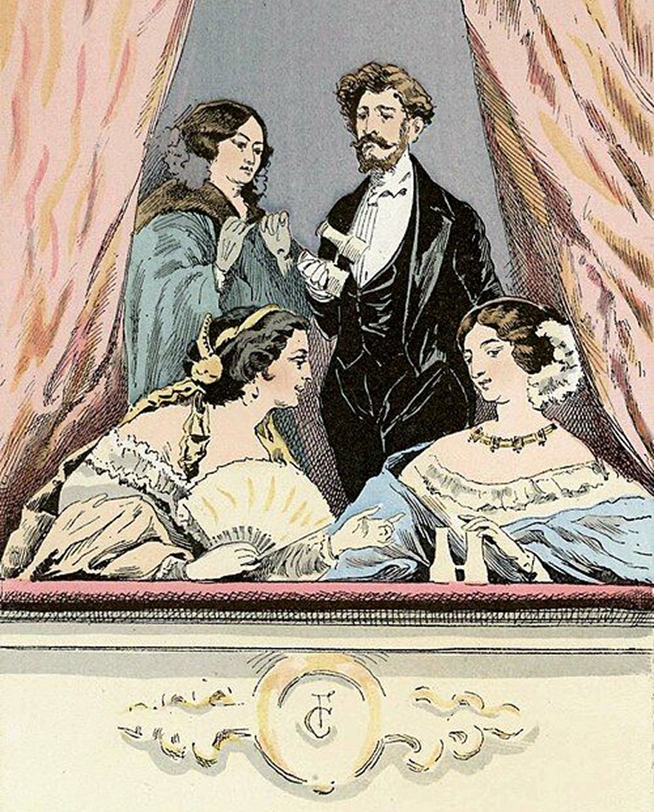
Дальше – чем ближе балкон к царской ложе – тем более знатные люди в нем сидят. Быть приглашенным в балкон считалось очень почетным. Там люди повышали свой социальный статус – краем глаза смотрели сам спектакль, а по большей части старались наладить связи.
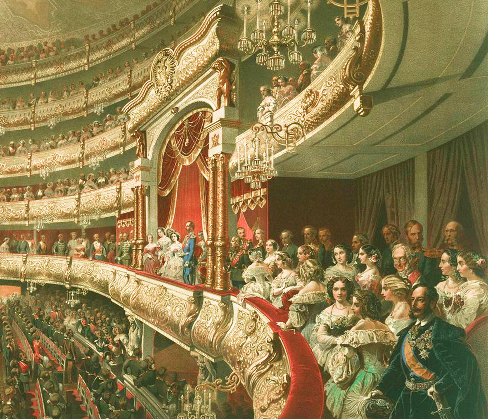
С балконов люди смотрят на зал как бы
свысока, а те, кто сидит в партере
по-настоящему наслаждаются спектаклем
Настоящие
ценители
Несмотря, на то, что театр изначально воспринимается как развлечение для людей с высоким социальным статусом, зачастую действительно наслаждаются постановками именно те, кто считается недостойным этого высокого искусства.
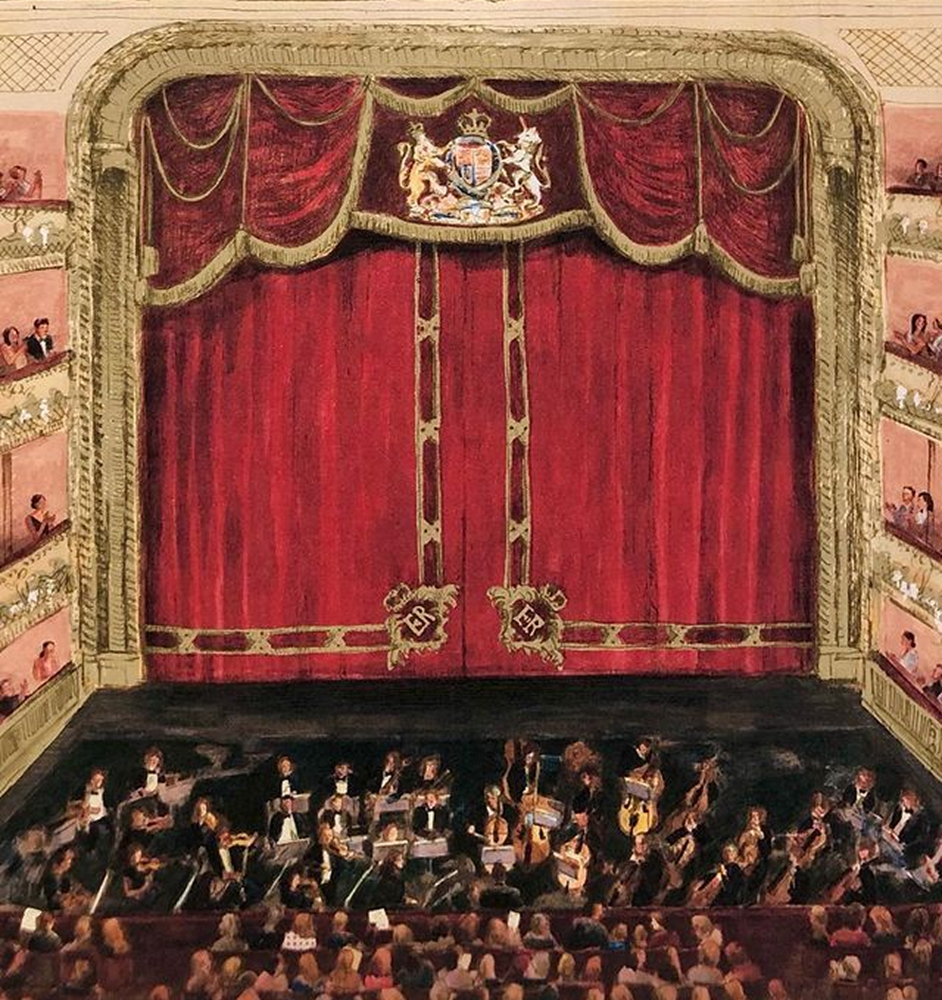
Время изменилось, но стереотипы остались,
забудь про них и приходи в театр